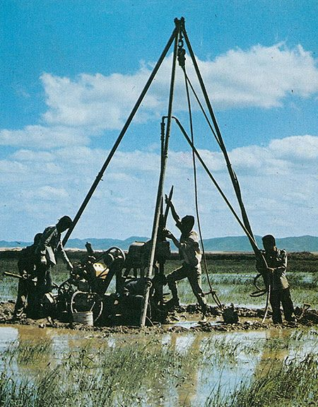
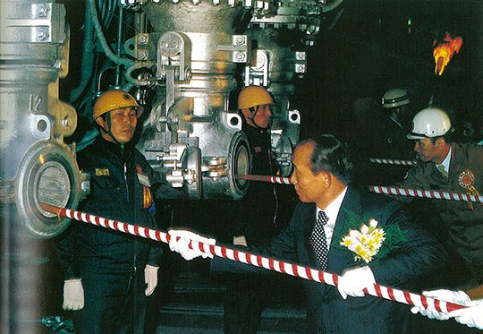
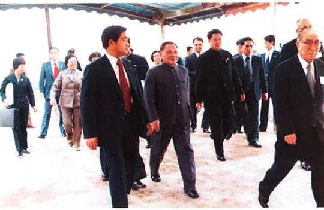
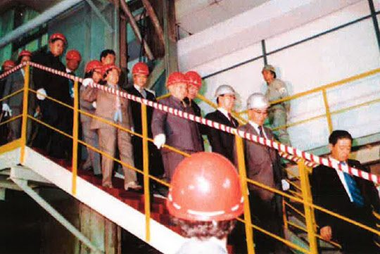

보도일 2015-04-13출처 조선일보 프리미엄조선 연재
제2제철소 실수요자 결정에 대해 박정희가 사실상 ‘박태준의 포철’로 결정한 것이나 다름없는 상황에서 박태준은 청와대 헬기에 올랐다. 앞 헬기엔 대통령, 비서실장, 경제수석, 포철 사장이 탑승하고 뒤 헬기엔 포스코의 건설계획부장, 대통령의 경호원들이 탔다. 박정희의 깊은 관심 속에서 ‘제2제철소 입지 선정’의 여정을 출발하는 것이었다.
헬기의 목적지는 서해안 가로림 지역. 오원철 경제2수석이 대통령에게 건의한 곳으로, 경북 영해를 포기한 현대가 재빨리 새로 찍은 곳이기도 했다. 답사를 마치고 박정희가 박태준에게 소감을 물었다. 그는 솔직히 답했다.
“제철소 입지를 간단하게 결정할 수는 없다고 생각합니다. 수많은 기술적, 경제적 요소들을 평가해야 하고 사전에 충분하고 면밀하게 조사해야 합니다.”
박정희가 고개를 끄덕였다.
“조사가 충분치 못했다는 얘기구먼. 그러면 전문가들에게 철저한 조사부터 시키도록 해야지.”

그런 다음에 박정희는 상공부 장관이 맡겨둔 서류에 결재를 했다. ‘제2제철소’라고 쓴 부분을 펜으로 지우고 친필로 ‘포철 제2공장’이라 쓰며 한마디를 덧붙였다.
“제2제철이 아냐. 포철 제2공장이지.”
그 말은 친필 글씨에 단단히 입히는 보호막 같았다. 이 장면을 직접 지켜보면서 가슴이 찡해오는 무엇을 느끼지 않을 수 없었던 최각규 상공부 장관은 그때로부터 어언 36년 가까이 흘러간 2014년 2월 13일, 《포스코신문》과 인터뷰에서 다음과 같이 회고한다.
<“청와대에 두고 온 서류(제2제철소 실수요자 선정 관련)에 결재가 난 것은 꽤 시간이 지나서였다는데, 대통령께서 서류를 다시 읽어보시더니 ‘제2제철’이라고 쓴 부분을 펜으로 지우고 대신 친필로 ‘포철 제2공장’이라고 쓰셨어요. 그러면서 ‘제2제철 아냐. 포철 제2공장이야.’ 하면서 아예 못을 박듯이 말씀하셨어요. 박정희 대통령의 포철에 대한 애착과 박태준 사장에 대한 강한 신뢰가 물씬 느껴져 왔어요.”>
10월 30일 최각규 상공부 장관이 ‘포항종합제철이 제2제철 실수요자로 선정’되었음을 공표했다. ‘포철 제2공장’을 건설할 박태준은 곧바로(11월 초순) 회사 내에 ‘제2제철소 입지조사위원회’를 출범시켰다. 위원회는 일본 해양컨설턴트, 가와사키제철, 네덜란드의 네데고 등 해외 용역업체에게 가로림 지역에 대한 종합적 정밀조사를 맡기기로 한다.
포스코가 제2제철소 실수요자로서 입지 선정의 ‘확실한 의견’을 내기 위한 확인 작업에 들어간 즈음, 영일만의 포철 3기 건설은 ‘공기 5개월 단축’이란 목표에 바짝 다가서고 있었다. 일꾼들이 치열한 작업강도를 11월 한 달만 더 감당해주면, 공기 5개월 단축에 대해 ‘지나친 욕심’이라거나 ‘무리한 추진’이라며 회의의 시선을 거두지 못하는 외국 기술자들에게 다시 한 번 ‘기적’을 보여줄 쾌거였다.
포철 3기 종합준공. 영일만에 연산 조강 550만 톤 규모 제철소를 완성하여 일약 세계 17위 제철소로 도약하는 포항종합제철, 남은 것은 종합준공식이었다. 대통령의 일정에 맞춰 날짜를 12월 8일로 잡았다. 즉시 박태준은 도쿄로 날아갔다. 지난 10년간 아낌없는 성원을 보내준 은인들에게 감사의 뜻을 담아 정중히 준공식에 초대하려는 걸음이었다.

박태준은 전혀 몰랐지만, 제법 오래 전에 배달된 ‘아주 특별한 화환’이 길이 시들지 않을 듯이 주인공을 기다리고 있었다. 도쿄에 내린 그가 맨 먼저 이나야마 신일본제철 회장을 방문했을 때, 포스코의 승승장구를 진심으로 축하해준 이나야마가 미소를 지었다.
“박 사장님, 중국에 납치되지 않도록 조심하세요.”
“무슨 말씀이십니까?”
박태준은 조금 긴장했다. 자라 보고 놀란 가슴 솥뚜껑 보고 놀란다더니, 순간적으로 그는 포철의 걸음마 단계에서 맞았던 저 1970년 5월 ‘저우언라이 4원칙’을 떠올렸다. 중국이 서방을 상대하는 대외무역의 원칙이라고 천명한 저우언라이 4원칙의 첫 번째가 ‘한국 및 대만과 경제협력관계를 맺고 있는 외국 상사나 메이커와는 무역을 하지 않는다’는 것이었다.
중국으로서는 한국과 대만에 불이익을 안겨줘서 북한과 북베트남의 기분을 맞춰주자는 속내였는데, 특히 중국의 거대시장을 두드려온 일본 상사들과 설비업체들이 일제히 얼어붙었다. 물론 포스코와 협력하는 일본 철강업체들도 납죽 엎드려서 그 원칙의 눈치를 살폈다. 그때 박태준의 부탁을 받기도 하고 자신의 대범한 기질도 발휘하여 그것을 맨 먼저 공개적으로 돌파한 일본인이 바로 이나야마였다.

어느덧 십 년쯤 지나간 그때의 긴박했던 사태를 언뜻 떠올린 박태준을 쳐다보며 이나야마가 껄껄 웃었다.
“지난 10월 26일에 중국 덩샤오핑이 우리 기미츠제철소를 방문했습니다. 자본주의 경제제도에 관심이 많은 것을 보니 죽의 장막에도 조금씩 문이 열리는 것 같습니다.”
1978년 그 냉전시대에 서방세계는 흔히 중국을 ‘죽의 장막’이라 부르기도 했다.
“몇 년 전에 벌써 조그만 탁구공이 거대한 죽의 장막에 구멍을 내지 않았습니까?”
박태준의 ‘탁구공’은 1974년 미국과 중국의 ‘핑퐁외교’를 가리켰다.
“그렇지요. 그런데 덩샤오핑은 일본의 제철소에 대한 관심이 유난히 깊더군요. 기미츠제철소를 둘러보면서 뜻밖에도 포항제철 이야기를 꺼냈습니다. 결론은, 우리한테 포항제철 같은 제철소를 중국에 지어달라는 것이었어요. 진심의 부탁이었는데, 내가 가능할 것 같지 않다고 정중히 답을 했어요. 덩샤오핑은 조바심을 내는 것 같더니, 그게 그렇게 불가능한 요청이냐고 되물었습니다.”
이나야마는 환한 표정으로 말을 이었다.
“제철소는 돈으로 짓는 것이 아니라 사람이 짓는데, 중국에는 박태준이 없지 않느냐, 박태준 같은 인물이 없으면 포항제철 같은 제철소는 지을 수 없다고 명백히 말해줬습니다. 덩샤오핑은 잠시 생각에 잠기더니, 그러면 박태준을 수입하면 되겠다고 하더군요. 박 사장님, 중국이 당신을 납치할지도 모릅니다.”
이나야마와 박태준은 홍소를 터뜨렸다.

그때 이미 중국 지도부는 ‘박태준 파일’을 갖고 있었다. 어떤 인물이 어떤 신념과 어떤 리더십으로 포항제철의 경이(驚異)를 이룩하였는가. 덩샤오핑은 꿰차고 있었다. 그것은 ‘박정희의 경제개발’을 주요 참고서로 활용하며 개방의 길로 나서는 중국 지도부가 한국 경제인들 중 박태준을 가장 훌륭한 인물로 인식하게 만드는 계기가 되었다. 그리고 이나야마가 여러 인사들에게 즐거운 화제로 삼았던 그 일화는 ‘발 없는 말이 천 리 간다’는 속담 그대로 시간의 흐름을 타고 널리 퍼져나갔다.